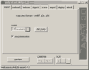
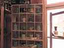
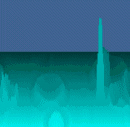
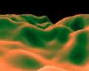

|
This category includes 10 applets, i.e., anfy3d
light, anfy3d player, anpanorama, fluid, galaxy, tmapcube, tunnel,
tunnel3d, voxel, and wormhole in particular.
Now look at each applet and select one to proceed
for detailed applet specific instructions.
|
 |
(1) Anfy 3D applet
light
This applet is a limited version of our Anfy
3D applet, which works together with the unique plugin for
3D Studio Max, and provide high quality real-time 3D animation.
|
 |
(2) Anfy3D
Player
This is not really a part of usual Anfy applets.
You need to be a graphic professional to use this. It's a
Java-enabled 3D animation player specifically designed for
Anfy 3D API.
|
 |
(3) Anfy Panorama applet
This applet displays 360 degrees panpramic image with some
unique features. Since it supports spherical image, you could
look up and down as well as pan around the screen.
|
 |
(4) Fluid applet
This applet simulates a vertical fluid motion.
|
 |
(5) Galaxy applet
This applet written by the author of Anfy3D
produces various kinds of realistic galaxy animations.
|
|
(6) Texture-mapped
cube applet
This applet creates a texture-mapped cube.
A variant of this applet is tmapcube menu applet.
|
 |
(7) Tunnel applet
This applets generates a texture mapped tunnel,
or rather call it a typhoon.
|
 |
(8) Tunnel applet 2
This applet produces another kind of tunnel effect, which
can be either sphericalal or of two parallel horizons.
|
 |
(9) Voxel applet
This applet generates a moving landscape,
which looks like a satellite's picture of a desert planet.
|
 |
(10) Wormhole applet
This applet produce a famous wormhole animation,
or better known as a dot tunnel.
|
|